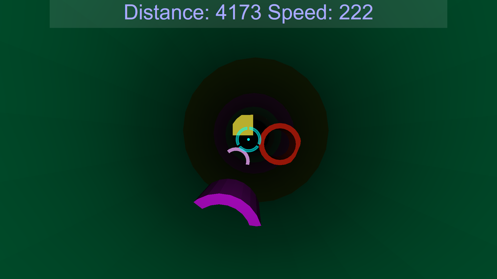

Who is that guy?
I'm Lukas Rosenberger, a third semester CompSci Student majoring in Game and Mixed Reality Engineering at FH Salzburg. I'm a huge fan of video games and am also currently pursuing a minor in Game Design.
Reality Ruckus
My current project is a 2D semi turn-based Roguelike called Realtity Ruckus. It is being developed in cooperation with 2 of my fellow students as part of our MMP2a (MultiMediaProject).
In Reality Ruckus, you are a hero who has been chosen to restore order to time and space following a catastrophic event which collapsed multiple realites into each other. Along the way you will meet fellow heroes who have been forced to leave their dimension.
You will have to explore randomly generated areas and face a multitude of foes in order to collect fragments of an artifact, which is the only hope to restore order back to space and time.
Upon finding all artifact fragments in an area, your hero will have to travel to the next dimension, where he will have to face new challenges.

An early development screenshot of Reality Ruckus' Sci-Fi setting
Yet Another Artillery Game
This is the game I made for my second semester multi media project (MMP). It's a basic Scorched Earth clone with different weapons and up to 8 player hotseat multiplayer.

A screenshot of Yet Another Artillery Game
Accelerator
This game mas made during my first semester at FH. It's a clone of a flash game with the same name only that it was made in JavaScript/WebGL with three.js.

A screenshot of Accelerator